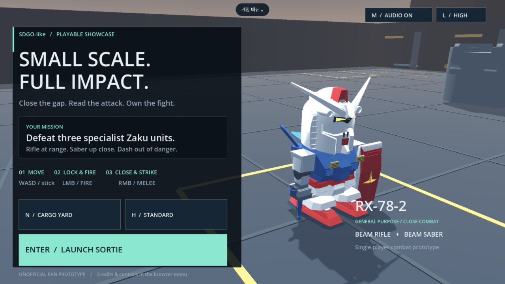

01 / DISTANCE
라이플에서 사벨로
자동 표적 보조, 탄창과 재장전, 3연격 사벨. 접근할지 거리를 둘지 선택합니다.

실행 화면 · Godot 4 Compatibility · 외부 런타임 CDN 없이 배포
자동 표적 보조, 탄창과 재장전, 3연격 사벨. 접근할지 거리를 둘지 선택합니다.
자쿠의 준비 동작과 바닥 예고를 읽고 대시로 이탈합니다. 빗나간 공격 뒤의 빈틈을 공략합니다.
상자를 파괴해 이동 경로와 사선을 엽니다. 돌격·측면·지원 역할의 적을 서로 다르게 상대합니다.
표준 난이도 / Cargo Yard를 선택하고 출격합니다. 목표는 자쿠 3기 격파입니다.
WASD와 좌클릭/F로 이동·사격합니다. 주황색 예고를 보고 Shift로 피한 뒤 가까이 붙어 우클릭/V를 한 번 누르면 한 번 휘두릅니다. 후딜레이에 다시 누르면 다음 콤보로 연결됩니다.
Tab으로 적 방향을 찾고, 가려졌다면 우회하거나 Space로 점프합니다. C로 자유 조준을 켜 상자를 파괴할 수도 있습니다. 실패해도 바로 재시도할 수 있습니다.
시간·명중률·남은 체력·메달을 확인합니다. 다음 시도에는 Reactor Ring 또는 Veteran을 선택해 차이를 비교합니다. 시간표는 발표 가이드이며 강제 제한시간이 아닙니다.
자동 검사와 브라우저 시연 결과는 저장소의 개발 문서에 기록합니다. 테스트 통과를 사용성·사업성 검증으로 대체하지 않습니다.
| 단계 | 제작 공수 추정 | 통과 기준 |
|---|---|---|
| 시연 설계 | 0.5일 | 첫 20초 안에 목표·조작·기체 이해 |
| 화면·시각 체계 | 1–2일 | 출격·전투·결과 화면 일관성, 명확한 조작 영역 |
| 전투 흐름 | 1–2일 | 상황 안내, 표적 탐색, 근접·원거리 흐름 검증 |
| 회귀·배포 | 1일 | 자동 검사, 두 전장 완주, PWA 갱신 확인 |
| 외부 시연 승인 | 3–5일 + 권리 협의 별도 | 실기기 10분 테스트, 신규 사용자 5명, 권리 방향 결정 |
공수는 후속 제작 계획의 추정치이며 확정 납기나 자동 실행 일정이 아닙니다. 현재 Candidate는 내부 시연용 검토 빌드입니다.
직접 플레이하기 →